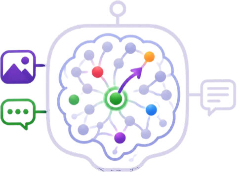
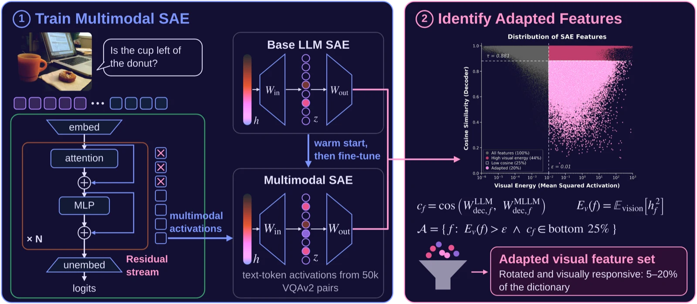
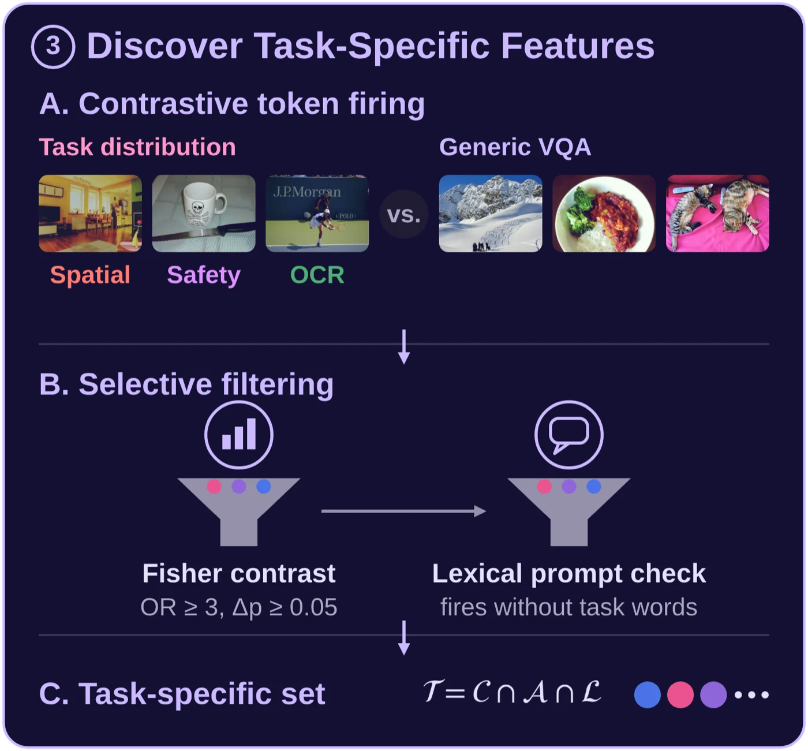
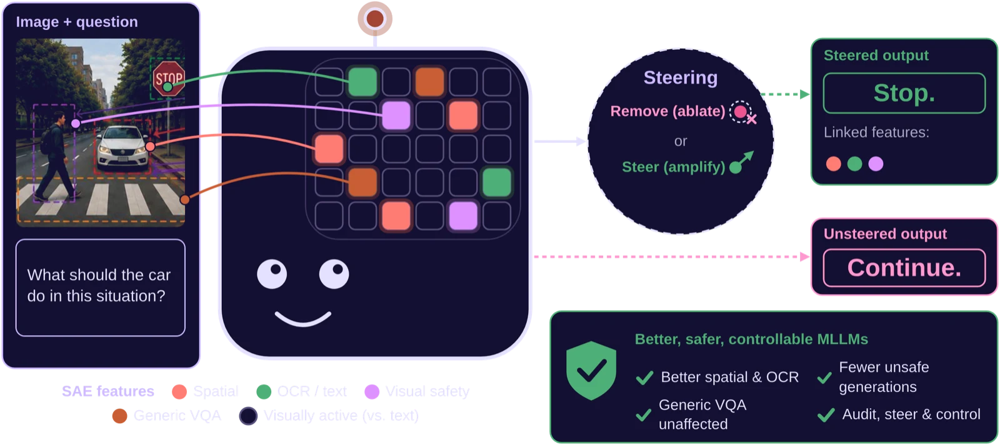

NeurIPS 2026
NeurIPS Sydney | Wed, Dec 9, 2026 | 10:00 AM – 1:00 PM AEDT | Hall 1-4
Find task-specific multimodal features. Control them for safer, more capable answers.
1University of Oxford 2Microsoft *Core contributors †Equal advising
Multimodal LLMs read text, localize objects and reason about space, but we cannot identify the internal features behind any capability. So we cannot explain failures, suppress unsafe behaviour, or steer a capability without retraining.
Across modalities, features for new capabilities are hard to distinguish from those inherited from the base LLM. SAEs don’t readily tell us which features were altered by multimodal training, which behaviours they correspond to, or how to use them for targeted control.
Pipeline
From a base-LM SAE, MMDiff trains a multimodal SAE, identifies features altered by multimodal training that prefer vision input, and discovers task-specific features by per-token contrastive firing. The same recipe serves all three domains; only the target distribution changes.


Applications (using discovered task-specific features)
Auto-interpret and inspect top activating samples.
Ablate feature(s) to test causal impact.
Add activation along the feature direction to steer behaviour.
Find task-specific heads via attribution patching.

Feature lab
Every glowing dot is a discovered feature from the paper’s tables, placed on the layer it lives in: spatial, OCR and multimodal safety. Feed the model an image, then steer or remove its feature and watch the answer change.
Interventions
Generations from PaliGemma 2 on held-out samples. The two columns differ only in a single feature direction, projected out or injected at its own layer. Flip the switch to apply the intervention.
Results
Projecting out a discovered feature degrades its target behaviour while general VQA and the domain control remain within one point.
The feature’s unit decoder direction v̂f is projected out of text-token activations at the attention, MLP and residual outputs of every layer.
Same pipeline, unchanged thresholds, three MLLM families with different language backbones, vision encoders and SAE objectives.
| Model | Backbone | SAE | Mean ΔVSR | Max |ΔVQA| |
|---|---|---|---|---|
| MMDiff-Llama | LLaMA-3.1-8B | TopK | −10.1% | 0.8% |
| MMDiff-Gemma | Gemma-2-2B | JumpReLU | −12.3% | 1.0% |
| MMDiff-Qwen | Qwen3-1.7B | TopK | −14.6% | 1.5% |
On VLSBench, where harmful intent is visible only in the image. One feature per category, removed individually. ΔCtrl is measured on MSSBench-safe, where both image and instruction are benign.
| Feature | Category | ΔASR | ΔVQA | ΔCtrl |
|---|---|---|---|---|
| L21/F12020 | Self-Harm | −28.14 | +0.90 | +1.00 |
| L23/F13965 | Erotic | −26.59 | −0.70 | 0.00 |
| L17/F3967 | Privacy | −25.99 | −0.10 | 0.00 |
| L13/F5205 | Violent | −24.43 | −0.10 | 0.00 |
| L9/F9066 | Hate | −21.08 | −0.80 | +1.00 |
| L7/F5567 | Illegal Activity | −17.96 | +0.70 | 0.00 |
| Mean | −9.67% | −0.03% | +0.41% | |
Every feature cuts attack success by 18–28% while leaving general VQA and benign behaviour within one point.
Removal is scored on the feature's own OCRBench category; the control is a non-OCR VQA subset.
| Feature | Category | ΔOCRBench | ΔVQA | ΔCtrl |
|---|---|---|---|---|
| L19/F10089 | Scene text | −28.0 | +0.2 | −0.4 |
| L17/F13602 | Scene text | −16.5 | +0.9 | +0.6 |
| L20/F10687 | Non-semantic | −16.0 | +0.6 | +0.4 |
| L21/F9577 | Digit string | −14.0 | −1.6 | −1.8 |
| L19/F14093 | Irregular | −10.0 | −0.5 | −1.0 |
| Mean | −16.9% | ≤1.6% | ≤1.8% | |
Steering
Multi-layer CAA across the task-feature layers, plus the discovered feature’s decoder direction at its own layer.
d is the multi-layer CAA direction and vf the feature’s decoder direction, injected at the feature-associated layer ℓf.
Each row applies a different combination of the selection criteria. Simpler selection rules over the same dictionary find features that hurt the task and wreck general VQA.
| Selection rule | Contrastive firing | Visual energy | Decoder rotation | Lexical check | ΔVSR | ΔVQA |
|---|---|---|---|---|---|---|
| Randomly-selected features | ✗ | ✗ | ✗ | ✗ | −0.5% | −0.2% |
| Contrastive firing only | ✓ | ✗ | ✗ | ✗ | −15.1% | −25.9% |
| Firing + visual responsiveness | ✓ | ✓ | ✗ | ✗ | −15.9% | −26.3% |
| Firing + lexical-invariance filter | ✓ | ✗ | ✗ | ✓ | −14.6% | −24.4% |
| Firing + adapted-feature filter | ✓ | ✓ | ✓ | ✗ | −1.0% | −0.2% |
| Full MMDiff pipeline | ✓ | ✓ | ✓ | ✓ | −12.3% | −0.1% |
Decoder rotation and visual energy together form the adapted-feature filter, the model-diffing step. Only the full pipeline is both causally effective and selective.
Abstract
Multimodal Large Language Models (MLLMs) exhibit strong visual understanding, yet the internal features that cause these behaviors remain difficult to identify, audit, or control. While applicable to post-hoc inspection, hidden states that are decomposed into interpretable feature directions using sparse autoencoders (SAEs) neither readily isolate which features are changed by multimodal training, nor are they directly useful for targeted control. We introduce MMDiff, a multimodal model-diffing framework that trains multimodal SAEs and turns them into feature-level interfaces for discovering and controlling multimodal behavior. MMDiff supports three uses: (i) feature isolation, by diffing a base-LM SAE against its multimodal-adapted counterpart to identify features altered by multimodal training; (ii) task-specific feature detection, via per-token contrastive firing analysis that isolates causal features; and (iii) feature-level control, by causally removing or steering the discovered feature directions. We train multimodal SAEs for three MLLM families, LLaVA-MORE, PaliGemma 2, and InternVL3.5, and evaluate on visual-spatial understanding, multimodal safety, and OCR. MMDiff discovers sparse, causally specific features whose removal selectively degrades target behaviors by an average of 12% on spatial tasks and 17% on OCR, and reduces attack success rate by 24% on multimodal safety attacks, with no impact on VQA performance. Steering these features improves spatial and OCR accuracy by +3.6% and +1.8% on average over a standard single-layer steering baseline. These results show that multimodal SAEs can serve not only as interpretability tools, but as mechanisms for auditing, steering, and controlling MLLMs behavior toward safer and more capable generations.
Citation
@inproceedings{batra2026mmdiff,
title = {Multimodal Model Diffing for Feature Discovery and Control},
author = {Batra, Hunar and Naghashyar, Lachin and Khakzar, Ashkan
and Torr, Philip and Schroeder de Witt, Christian
and Venhoff, Constantin and Clark, Ronald},
booktitle = {The Fortieth Annual Conference on Neural Information Processing Systems (NeurIPS 2026)},
year = {2026},
eprint = {2608.09928},
archivePrefix = {arXiv},
primaryClass = {cs.CV},
url = {https://arxiv.org/abs/2608.09928},
}